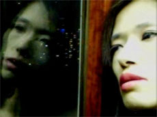

|
SPYDER
Ishibashi Kiyomi | J 2009 | 115 Min.
Material : DV
Format: DVCam
Originalsprache: Japanisch
Drehbuch: Ishibashi Kiyomi
Story: Thierry Acot-Mirande
Kamera: Ishibashi Kiyomi
Ton: Ishibashi Kiyomi
Schnitt: Ishibashi Kiyomi
Mit Ishibashi Kiyomi, Yan Kassile, Matsuda Tokue, Koshida Noriko u.a.
Produktion: Ishibashi Kiyomi
Vertrieb: Ishibashi Kiyomi
Deutsche Erstaufführung
Eher wie ein Geheimagent ('Spy'), als das gleichnamige Insekt, schleicht sich die Protagonistin in Ishibashi Kiyomis komplett auf dem Handy gedrehten Film durch ihre geheimnisvolle Welt. Sie schnüffelt in der Wirklichkeit oder vielmehr in verschiedenen Ebenen von Wirklichkeiten und entdeckt eine Welt zwischen Horror und Ekstase, wozu auch das Kino gehört. Und die erste Liebe. Oder eine Möglichkeit von Liebe. Auf der Suche nach der verlorenen Kindheit und einer Idee vom richtigen Leben im Falschen versucht sie, ihren Traum vom eigenen (Zu-)Hause zu realisieren. Ihre diffuse Wahrnehmung ist Teil einer verstörten Persönlichkeit, die ihre Umgebung als einzigen Albtraum erfährt. Vielleicht auch ein Problem der Moderne...?
Ishibashi Kiyomi, geb. 1975 in Hiroshima, Japan, macht ihr Diplom an der Universität von Tokio und studiert anschließend Film und Audiovisuelle Medien an der Sorbonne in Paris. Momentan forscht und arbeitet sie als wissenschaftliche Assistentin an der Technischen Universität in Tokio. Sie schreibt u.a. Filmkritiken für die Cahiers du Cinéma und Marie Claire Japan. Spyder ist ihr erster Langfilm.
Filme: Silent Scream 2007 | Spyder 2009
zurück
|